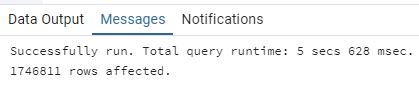

Los índices, tal como hemos visto en la Sesión sobre Optimización y Eficiencia, ayudan a guiar el
SGBD hacia los datos relevantes en las diferentes queries que los involucran. Sin embargo, el
SGBD no está obligado a utilizarlos. De hecho, él mismo decidirá si emplearlos o no, aunque la
query claramente involucre un atributo que tiene asociado un índice. Uno de los factores más
relevantes para que un SGBD, como PostgreSQL, decida descartar el uso de un índice es el
tamaño del conjunto de datos que se está buscando: Si se piden muchos datos, quizás sea más
rápido y sencillo recorrer toda la tabla (SECUENTIAL SCAN), en lugar de ir recorriendo el índice
en si (meta-dato), para luego saltar a los datos que se encuentran en la tabla.
En esta actividad vamos a inspeccionar este comportamiento de PostgreSQL, para entender
cuando y como el SGBD decide usar los índices que creamos. Recuerda que, si se crea un índice
para mejorar una query, pero el SGBD descarta su uso, no solo la query no se verá beneficiada,
sino que el rendimiento del sistema podría empeorar, ya que el SGBD tendrá que mantener y
actualizar un índice inservible.
[1] Programa una query en SQL que devuelva todos los títulos con startyear entre 2000
y 2010
(ambos incluidos), y ordene los resultados desde el año más pequeño al más grande, es decir,
de manera ascendente. Queremos mostrar todos los atributos, es decir, no es necesario que
realices ningún tipo de proyección en la cláusula SELECT.
[2] Ejecuta la query y guarda el tiempo de respuesta. Guarda también el número de
filas que
PostgreSQL ha devuelto.
[3] Pide a PostgreSQL el planning de ejecución (EXPLAIN) y observa como este ha
realizado un
escaneo secuencial pues, obviamente, no existe ningún índice aún.
[4] ¿Cuál es la variable por la que la query filtra los resultados a devolver? Crea
un índice para
intentar mejorar dicha query.
[4.1] Observa como la creación del índice no ha sido inmediata. Crear un índice es
costoso, y
implica mantener esa estructura de metadatos en memoria RAM o en disco. ¿Qué crees que
pasará si existe un índice y añadimos más filas a la tabla (INSERT)? Obviamente, el índice tendrá
que reconstruirse para poder tener en cuenta también ese nuevo dato. No se reconstruirá desde
cero, claro, sino que simplemente se actualizará. Si el índice es un árbol B+, es posible que haya
cierto balanceo en los nodos intermedios. Por tanto, cada vez que se realicé un INSERT, esta
operación disparará (como si de un trigger se tratase) otra operación de adaptación del índice.
Habremos mejorado la eficiencia de querying (quizás), pero… ¿Qué pasará con las operaciones
INSERT? ¿Se verán afectadas negativamente? Por otro lado, ¿qué crees que pasará con las
operaciones UPDATE: ¿Tendrán el mismo comportamiento? ¿En qué circunstancias un UPDATE
podría disparar ese mecanismo?
[5] Ejecuta la query y guarda el tiempo de respuesta. Guarda también el número de
filas que
PostgreSQL ha devuelto. ¿Ha mejorado el tiempo de repuesta?
[6] Pide a PostgreSQL el planning de ejecución (EXPLAIN) y detecta que tipo de
operación ha
realizado: ¿Un escaneo secuencial, una búsqueda mediante índice? Observa cómo, que exista
un índice potencialmente útil para una query, no implica que el SGBD vaya a utilizarlo.
[8] Vuelve a ejecutar la query, pero esta vez asegúrate que busque títulos con
startyear
BETWEEN 2000 AND 2008, en lugar de 2010. Guarda el tiempo de respuesta. Guarda también el
número de filas que PostgreSQL ha devuelto.
[9] Pide a PostgreSQL el planning de ejecución (EXPLAIN) y observa como este ha
realizado un
escaneo secuencial pues, obviamente, no existe ningún índice aún.
[10] Vuelve a crear el índice de antes y vuelve a ejecutar la query. Apunta el tiempo
de respuesta
y las filas devueltas. Observa mediante EXPLAIN si ha utilizado el índice o no.
[11] Ya hemos analizado los siguientes escenarios, marcados en azul. Completa toda la
tabla,
repitiendo los pasos anteriores, pero con diferentes años.
[12] ¿Cuándo ha empezado a utilizar el SGBD el índice? ¿Cómo lo has detectado? ¿Qué
sucede
cuando startyear es entre 2000 y 2000 (WHERE startyear = 2000)?
[13] Calcula, mediante un SELECT COUNT(*) el número total de filas de la tabla.
[14] Una vez obtenido el número total de filas, calcula, para cada query, el
porcentaje de filas
que dicha query devuelve, respecto al total de la base de datos. ¿En que porcentaje ha
comenzado a funcionar, el índice?
[15] Hemos visto que los índices funcionan mejor en porcentajes de retrieval pequeños
(en %).
Imagina que estas construyendo un portal web con los datos de IMDb. Planeas que cada usuario
pueda buscar películas mediante el año de comenzó (startyear). ¿Qué crees que sería más
conveniente, teniendo en cuenta este índice?
[16] Permitir al usuario que busque películas mediante un dropdownbox, donde cada
item u
opción sean un año específico
[17] Permitirle buscar por un rango de fechas (año inicio – año fin)
1 - Crea una query para obtener todos los títulos con startyear entre 2000 y 2010 (ambos incluidos), ordenados
ascendentemente.
2 - Ejecútala, anota el tiempo de respuesta y el número de filas devueltas.
3 - Utiliza EXPLAIN para ver el plan de ejecución. ¿Se realiza escaneo secuencial?
La imagen muestra un Parallel Seq Scan en la tabla title_basics. Esto significa que
PostgreSQL está realizando un escaneo secuencial sin utilizar índices, pero aprovechando la paralelización para
distribuir la carga de trabajo.
Además, se observa un Gather Merge que recoge y ordena los resultados por startyear,
y un Filter que asegura que solo se devuelven los registros con startyear entre 2000
y 2010.
[4] ¿Cuál es la variable por la que la query filtra los resultados a devolver? Crea un índice para intentar
mejorar dicha query.
La query filtra los resultados usando la variable startyear. Para mejorar el rendimiento de la
consulta, podemos crear un índice sobre la columna startyear de la tabla title_basics.
A continuación, se muestra la instrucción SQL para crear el índice:
CREATE INDEX idx_title_basics_startyear
ON title_basics (startyear);
Este índice ayudará a PostgreSQL a localizar de forma más eficiente los registros que cumplen la condición de
filtrado en startyear, lo que puede mejorar el rendimiento de la consulta.
4.1 - Impacto de los índices en operaciones INSERT y UPDATE
La creación y mantenimiento de un índice (como un árbol B+) implica un coste, ya que se debe almacenar y
actualizar una estructura adicional en disco o memoria. Cuando se realiza un INSERT, el nuevo registro se añade a
la tabla y, simultáneamente, se inserta su valor correspondiente en el índice. Esto puede incluir el recorrido del
árbol y, en algunos casos, un reequilibrio de los nodos intermedios para mantener la eficiencia del índice, lo que
retrasa la operación.
Por ello, las operaciones INSERT se verán afectadas negativamente en cuanto a rendimiento debido al coste extra de
actualizar el índice con cada nueva inserción.
En el caso de los UPDATE, el impacto dependerá de si la columna que se modifica forma parte del índice. Si se
actualiza una columna indexada, el índice deberá ajustarse de forma similar a un INSERT (realizando el
reequilibrio necesario), lo que afectará el rendimiento de esa operación. Si la columna modificada no está
indexada, el índice no se verá involucrado y, por tanto, el UPDATE no sufrirá ese coste adicional.
En resumen, aunque los índices mejoran la eficiencia de las consultas SELECT, su mantenimiento puede ralentizar
las operaciones INSERT y, en caso de actualizar columnas indexadas, también los UPDATE.
[5] Ejecuta la query y guarda el tiempo de respuesta. Guarda también el número de filas que PostgreSQL ha
devuelto. ¿Ha mejorado el tiempo de respuesta?

Como se aprecia en las imágenes, antes de crear el índice la consulta tardó alrededor de 9.939
segundos, mientras que después de crearlo, el tiempo se redujo a 5.628 segundos.
En ambos casos, el número de filas devueltas es el mismo (1746811), pero la velocidad de ejecución
mejora sensiblemente al contar con el índice sobre startyear.
6 - Usa EXPLAIN de nuevo. ¿Observas escaneo secuencial o uso de índice?
En la imagen se aprecia que el plan de ejecución realiza un Parallel Seq Scan sobre la tabla
title_basics, lo que significa que PostgreSQL ha optado por un escaneo secuencial (paralelizado) en
lugar de utilizar el índice creado en startyear.
Esto sucede porque el optimizador de consultas considera que, dado el rango de datos solicitado (de 2000 a 2010),
puede resultar más eficiente escanear la tabla completa en paralelo que recurrir a un índice. Recuerda que la
existencia de un índice no garantiza su uso; PostgreSQL elige la estrategia que calcula más rentable en función de
la selectividad y el coste estimado.
7 - Elimina el índice con DROP INDEX
Para eliminar el índice que creaste en startyear, utiliza la siguiente sentencia SQL:
DROP INDEX IF EXISTS idx_title_basics_startyear;
Con esto, el índice deja de existir y PostgreSQL ya no lo tendrá en cuenta al planificar las consultas.
[8] Vuelve a ejecutar la query con startyear BETWEEN 2000 AND 2008
Según los mensajes de pgAdmin4, la query se ejecutó en 4 secs 403 msec y devolvió
1,282,841 filas.
Estos datos permiten evaluar el rendimiento de la consulta con el rango modificado en startyear y
compararlo con ejecuciones previas.
[9] Pide a PostgreSQL el planning de ejecución (EXPLAIN) y observa como este ha realizado un escaneo secuencial
El plan de ejecución muestra un Parallel Seq Scan sobre la tabla title_basics. Dado
que no existe ningún índice en startyear, PostgreSQL recorre la tabla de forma secuencial para
satisfacer la consulta que filtra por startyear BETWEEN 2000 AND 2010 y ordena los resultados por
startyear.
10 - Crea de nuevo el índice y repite la query. ¿Se utiliza ahora el índice?
En la primera imagen (ask_10.jpg) se ve el proceso de creación del índice en la columna
startyear y la ejecución de la consulta que filtra entre los años 2000 y 2008. Observa el tiempo de
respuesta y el número de filas devueltas.
En la segunda imagen (ask_10_01.jpg) se muestra el resultado de EXPLAIN al filtrar
por startyear entre 2000 y 2010. Vemos que PostgreSQL ha optado por un Parallel Seq
Scan, lo que significa que, a pesar de existir un índice, el optimizador consideró más eficiente
escanear la tabla de manera secuencial y paralelizada para ese rango amplio de datos.
En conclusión, la existencia de un índice no garantiza que sea utilizado. El motor de la base de datos sopesa la
selectividad y el coste estimado de cada estrategia antes de elegir entre un escaneo secuencial o el uso del
índice.
11 - Repite y completa el análisis para distintos rangos de años. ¿Cuándo empieza a ser efectivo el índice?
[12] ¿Cuándo ha empezado a utilizar el SGBD el índice? ¿Cómo lo has detectado? ¿Qué sucede cuando startyear es
entre 2000 y 2000 (WHERE startyear = 2000)?
Al analizar los planes de ejecución (EXPLAIN) para cada rango, se observa que en los intervalos
amplios (BETWEEN 2000 AND 2010, BETWEEN 2000 AND 2008 y
BETWEEN 2000 AND 2006) PostgreSQL opta por un Parallel Seq Scan. Esto indica que no
utiliza el índice, ya que considera más rentable (por el volumen de datos) recorrer la tabla secuencialmente de
forma paralela.
Sin embargo, cuando el rango se reduce (BETWEEN 2000 AND 2004 o BETWEEN 2000 AND 2002),
el plan de ejecución muestra un Parallel Bitmap Heap Scan combinado con Bitmap Index
Scan en el índice idx_title_basics_startyear. Ahí es donde empieza a emplearse el índice,
pues la consulta abarca menos datos y el motor de la base de datos considera que es más eficiente.
Si restringimos aún más la consulta a un único valor (WHERE startyear = 2000 o
BETWEEN 2000 AND 2000), el optimizador probablemente utilice un Index Scan directo
(o un Bitmap Index Scan) en lugar de recorrer la tabla. Con un único año, la búsqueda es muy
selectiva y el índice ofrece una ventaja notable.
En resumen, el uso del índice depende de la selectividad de la consulta y del coste estimado que realiza
el optimizador. Cuanto menor sea el rango de años, mayor es la probabilidad de que el índice se use para acelerar
la búsqueda.
13 - Calcula, mediante un SELECT COUNT(*) el número total de filas de la tabla
14 - ¿En qué porcentaje el SGBD empieza a usar el índice? ¿Por qué sucede así?
El SGBD utiliza el índice cuando la consulta es muy selectiva, es decir, cuando devuelve aproximadamente un 15% o menos del total de filas.
Para rangos amplios (por ejemplo, BETWEEN 2000 AND 2010 o 2000 AND 2008) se recupera un alto porcentaje de filas y se opta por un Parallel Seq Scan;
mientras que para rangos reducidos (como BETWEEN 2000 AND 2002 o WHERE startyear = 2000) el índice se usa para acelerar el acceso.
15 - Si un usuario busca películas por startyear, ¿qué conviene más, un listado fijo por años o permitir rangos?
Permitir rangos suele ser más conveniente, ya que ofrece mayor flexibilidad.
Los usuarios pueden definir períodos específicos según sus necesidades, en lugar de estar limitados a opciones predefinidas.
16 - Dibuja el diseño de PERSONA y subclases (Portero, Alquilado, Propietario)
En este diagrama UML, PERSONA es la clase base y Portero,
Alquilado y Propietario son las subclases que heredan de ella.